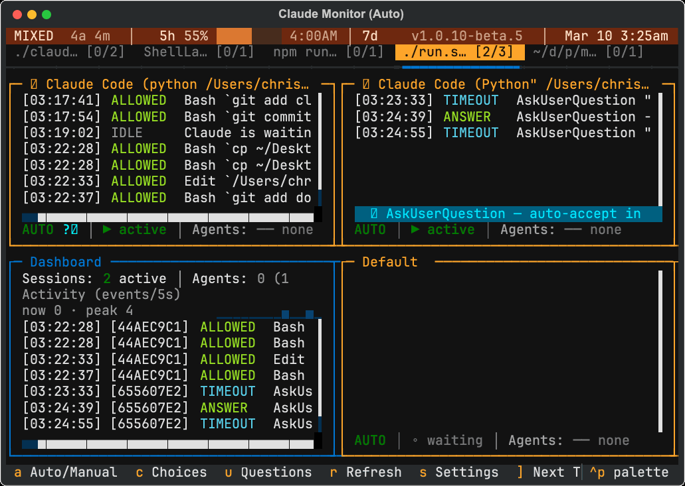
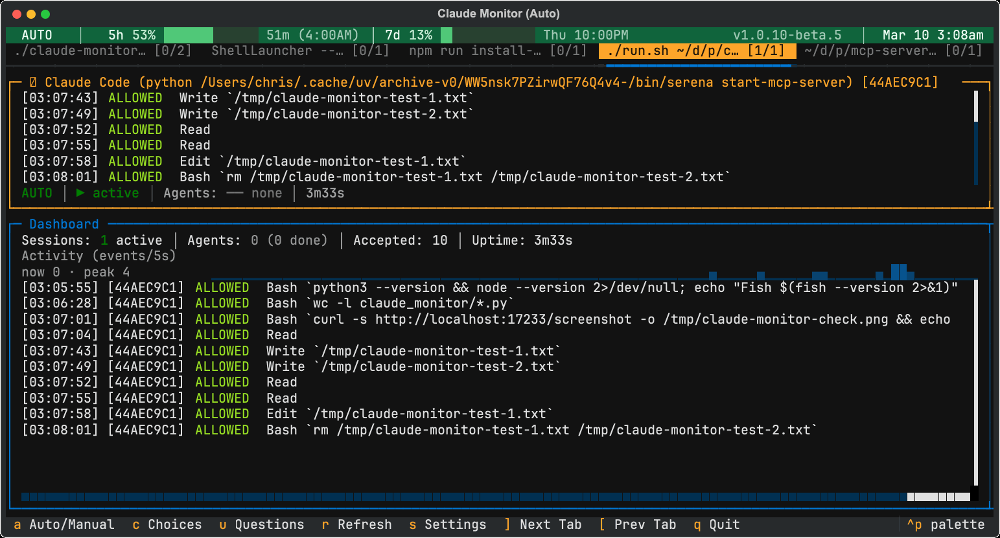
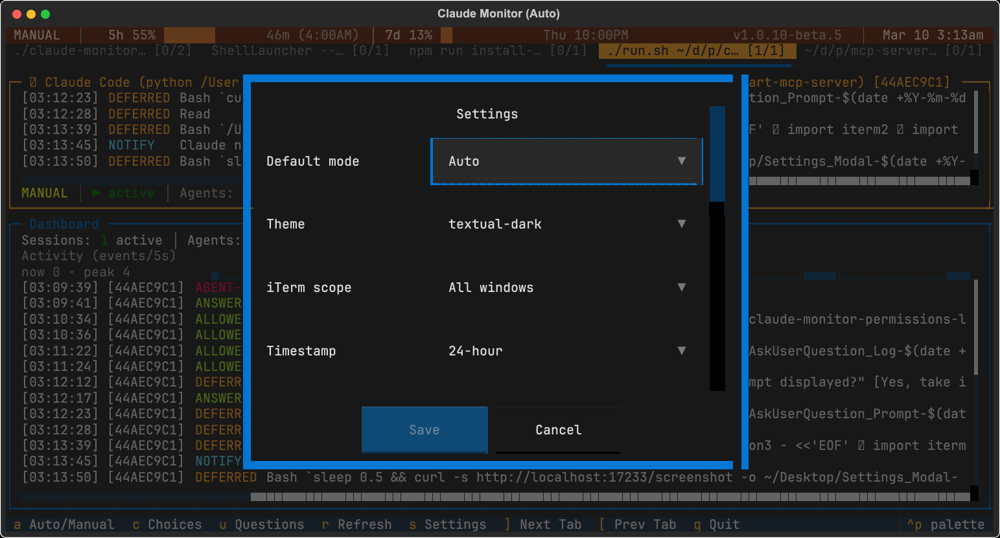
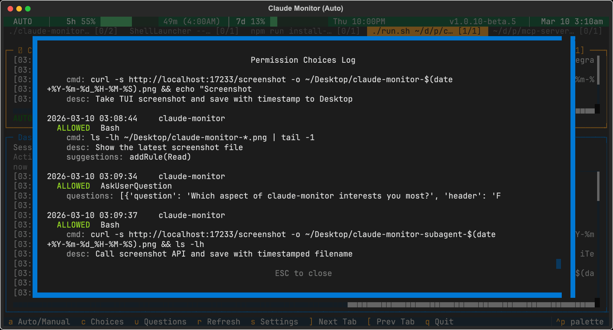
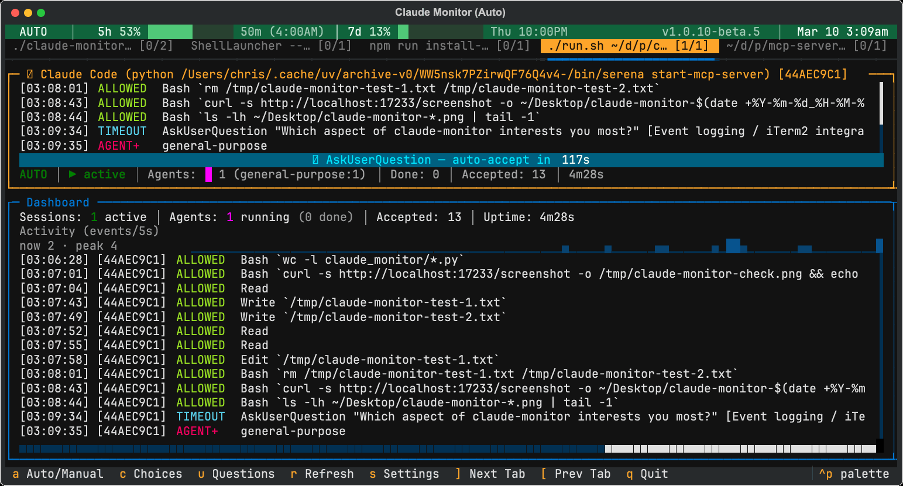
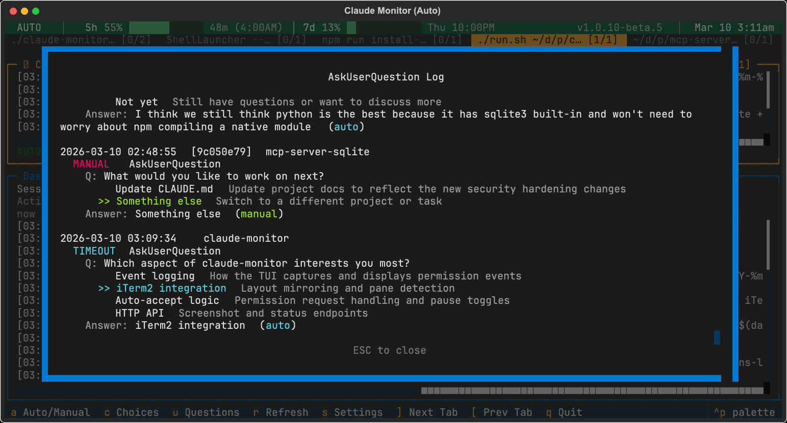
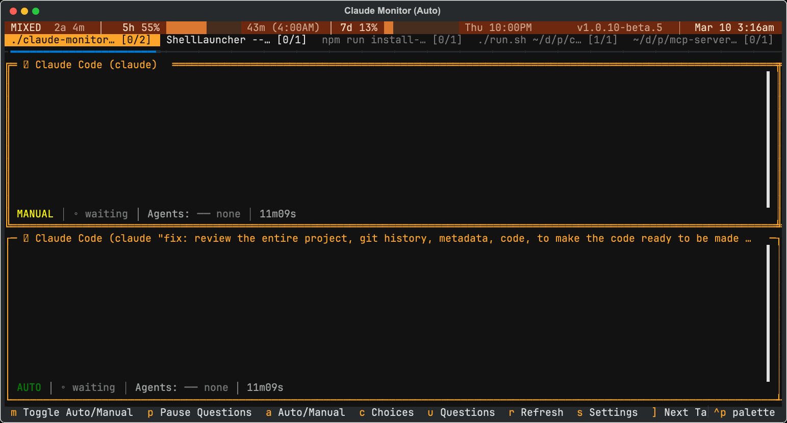

Follow live activity, control permission approvals, and track subagents from one terminal dashboard. Save session hand-offs and rotate sessions with context to pick up where you left off. Mirror iTerm2 panes on macOS, or use simple tabbed mode on Linux and other terminals.
Free & open source
Permission prompts are automatically accepted so sessions run hands-free. No more switching between panes to approve every Bash, Edit, or Write.
Toggle individual panes between auto and manual mode, or use the global toggle. Click a panel's status bar or press m on a focused panel.
Keep prompts, files touched, git branch state, agent activity, and open questions together. Enable hand-off capture in Settings, then browse the Hand-off tab, CLI, or Markdown digests when you return.
Clear or compact an exact iTerm2 session and carry forward a bounded summary. Rotate on demand or after configurable silence; automatic rotation defers pane input during permission requests and questions. Outside iTerm2, capture stays local.
Open a session's saved summary from its pane title. Captured facts stay local by default. Optional LLM summaries add a goal, stopping point, and next steps; enabling them sends session excerpts to your configured provider.
Recognize sessions running in git worktrees through distinct titles and styling. Keep parallel branches easy to identify alongside your other sessions.
Mirror split panes and multiple tabs with proportional sizing. New and closed panes are detected every three seconds while event history, panel state, active tab, and focus are preserved.
Tabbed TUI that works on any platform without iTerm2. Auto-detects sessions via the event log. Runs automatically outside iTerm2 or on Linux.
Tracks subagent lifecycle per session with active counts, type breakdowns, and completion totals. Know exactly what's running where.
Grow or shrink the dashboard pane with = and -. Minimize to a one-line summary with d. Height persists across restarts.
Live Anthropic API quota utilization with 5-hour and 7-day progress bars, color coding, and reset countdowns. OAuth token from Keychain or env var.
Quick access to all commands via Ctrl+P. Choose from 20 themes including dracula, catppuccin, nord, gruvbox, tokyo-night, and more.
Connect external tools to the localhost API for health checks, structured JSON state, and PNG or SVG screenshots of the dashboard.
Inspect, refresh, and import Claude Code OAuth credentials in the macOS Keychain with a companion CLI. Transfer credentials between machines using an encrypted, authenticated connection and a shared passphrase.

Aggregate stats, activity sparkline, and combined event feed from all sessions.

Choose mode defaults, iTerm2 scope, timestamps, account usage, and one of 20 themes.

Full history of every permission request with tool details, commands, and descriptions.

See the active question and the hook's timeout countdown while a session is in manual mode.

Track all AskUserQuestion events across sessions with full question/answer history.

Set approval mode per pane and see the combined auto/manual counts in the status bar.
The installer creates a virtual environment, installs companion commands, and asks before configuring Claude Code hooks. Make sure ~/.local/bin is on your PATH.
For pane mirroring and live session rotation, enable iTerm2's Python API on macOS. Other terminals use simple mode automatically, or run claude-monitor --simple. Hand-off capture and automatic rotation are off by default; enable them in Settings. See the installation guide for details.